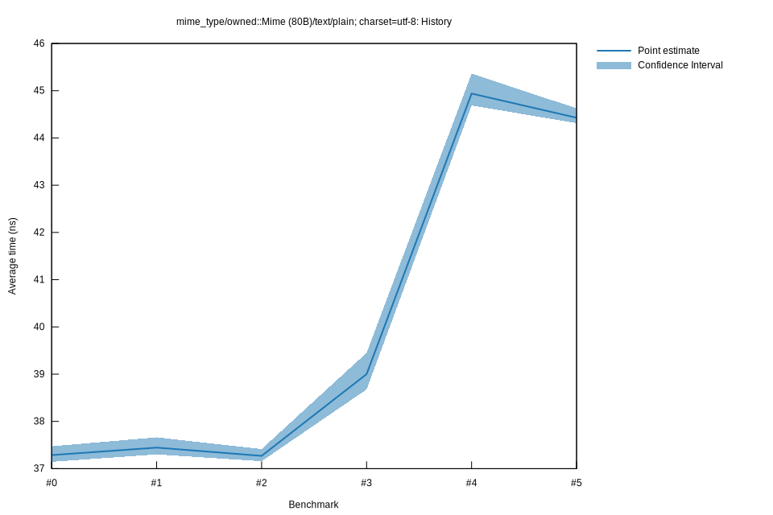

# 32025-10-14T15:36:10-07:00
|
Lower Bound |
Estimate |
Upper Bound |
| Value: |
38.68ns |
39.00ns |
39.45ns |
| Throughput: |
616.44MiB/s |
611.30MiB/s |
604.32MiB/s |
| Change in Value: |
+2.3308% |
+4.0654% |
+5.7404% |
| Change in Throughput: |
-2.2777% |
-3.9065% |
-5.4288% |
No change in performance detected.
# 22025-10-05T14:43:46-07:00
|
Lower Bound |
Estimate |
Upper Bound |
| Value: |
37.16ns |
37.27ns |
37.41ns |
| Throughput: |
641.63MiB/s |
639.70MiB/s |
637.24MiB/s |
| Change in Value: |
-1.8063% |
-0.5308% |
+0.8950% |
| Change in Throughput: |
+1.8396% |
+0.5336% |
-0.8870% |
Change within noise threshold.
# 12025-10-05T13:02:24-07:00
|
Lower Bound |
Estimate |
Upper Bound |
| Value: |
37.30ns |
37.45ns |
37.66ns |
| Throughput: |
639.17MiB/s |
636.71MiB/s |
633.04MiB/s |
| Change in Value: |
-0.9107% |
+0.6150% |
+1.9887% |
| Change in Throughput: |
+0.9191% |
-0.6112% |
-1.9500% |
Change within noise threshold.
# 02025-10-05T13:00:30-07:00
|
Lower Bound |
Estimate |
Upper Bound |
| Value: |
37.14ns |
37.29ns |
37.47ns |
| Throughput: |
641.86MiB/s |
639.41MiB/s |
636.24MiB/s |